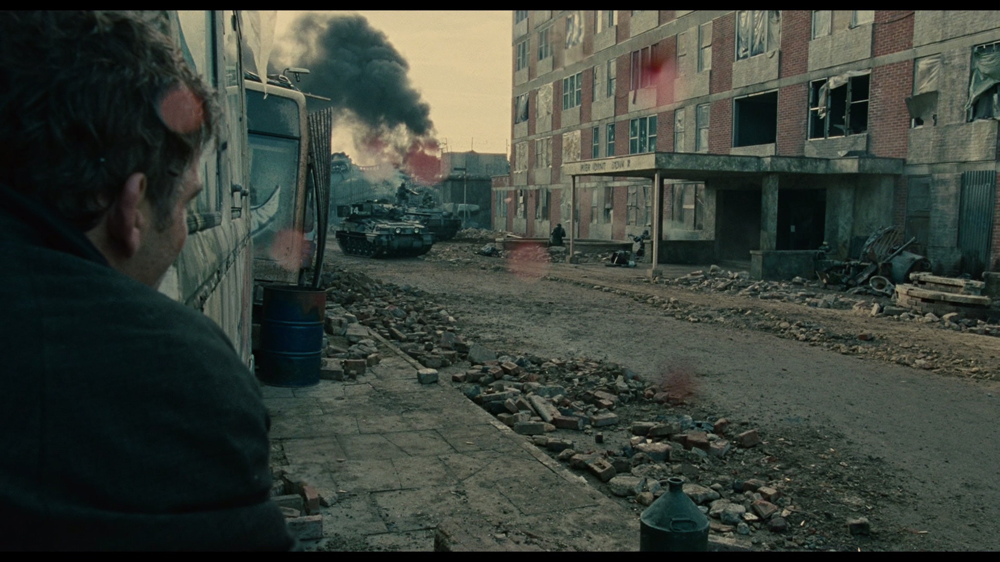
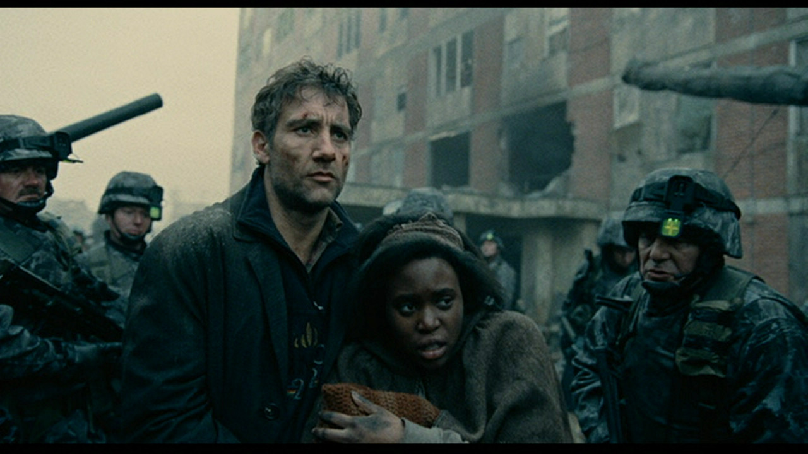

On Children of Men
Alfonso Cuarón’s Children of Men is a movie set in the year 2027, in a bleak world where no children have been born for nearly two decades. Perhaps because we’re particularly fecund at the moment, and it’s set in the future, it’s been labelled ‘dystopic science- fiction’. However, after watching the movie, it was clear that this isn’t an ordinary science fiction movie. Moreover, the real horror of the movie is that as traumatic as the movie is to watch, when compared to present times, it seems Utopian.
Theo (Clive Owen), a bureaucrat with an activist past, lives in a fascist-controlled United Kingdom. Because it’s one of the few remaining functioning governments in the world, it’s the destination of millions of refugees from the rest of the world seeking asylum. The British Army rounds up and detains all illegal immigrants and suspected sympathisers. The Fishes, an underground group advocating equal rights for illegal immigrants in Britain, contact Theo for help in obtaining a travel permit for a young refugee woman named Kee (Clare-Hope Ashitey). After an action-packed journey with treachery and unexpected plot twists, Theo is in charge of getting Kee to the Tomorrow, a ship run by the Human Project, which is a near-mythical group of scientists dedicated to curing infertility who are supposedly based in the Azores. En route, Kee gives birth to the first baby in the world in eighteen years. Theo, the tragic hero, dies moments before Kee sees the Tomorrow, in a little boat off the refugee camp in Bexhill.

Children of Men is an action-packed movie. Cuarón uses long, slow takes showing banal activity immediately before sudden, explosive scenes, making their impact immensely powerful. In the first five minutes, we are shown a long scene of Theo watching television in a pub, and then walking out slowly, pausing for a while to look around filthy, garbage strewn Fleet street. Without warning, a bomb in the pub goes off, startling the viewer out of her skin. Much of the latter half of the movie is set in Bexhill Refugee Camp, which is a huge pile of rubble where Kalashnikov-toting resistors square off with tanks and heavily armed British troops. Perhaps extraordinarily for an ‘action’ movie, Theo never takes up a weapon, even in self defence. He runs when he hears gunfire, and takes cover when shot at, and throws up his hands in surrender when confronted. None of this detracts from the intensity of the action — his task is to get Kee to safety, which he does with heart-stopping fervour and admirable tenacity.
Children of Men uses many long single-shot sequences in which extremely complex actions take place. The longest of these is a scene in which Theo is captured by the Fishes, escapes, and runs down a street and through a building while a vicious street battle ensues (454 seconds). Then, the unwavering camera puts you in the middle of a gunfight with vivid, nauseating realism. Gunfire sounds unromantic and traumatic; people die suddenly and without drama. Blood splatters on the lens. The long takes offer no reprieve to the viewer, who is thrust eyeball first into the midst of the situation with no veil between him and the nightmare unfolding on screen.
As in District 9, news broadcasts and a ‘journalistic’ palette are used skillfully and with great success. There are televisions everywhere, either with bleak news from around the world or with propaganda in support for the fascist government and its policies. The verisimilitude of the newscasts is eerie; and the inclusion of news in many modern dystopic movies is an important distinction from early science fiction and dystopia movies. Without the inclusion of news, most movies are accepted by the viewers as ‘stories’. The inclusion of authentic- looking broadcasts lowers the threshold for the willing suspension of disbelief, hurtling the viewer into the movie’s universe, which doesn’t seem so different from reality.
Despite its theme (that of global, near- synchronous infertility), Children of Men is no ordinary science fiction movie. There are no technological wonders to distract the viewer or to compensate for weak story lines. The movie is set in a world that is only slightly grimier than ours. The cars are only slightly different, the computers entirely believably for its time (or ours). In fact, its main theme of infertility is downplayed, and frequent references to societal collapse, racism, fascism and environmental disaster are made to explain the darkness of the times. And these aren’t fictional themes.
Children of Men combines an excellent storyline with powerful cultural references and masterly filming to produce a picture of unrelieved horror, when it wishes to. The simple addition of a metal grille to the outside of subway trains conveys vividly the un- remitting danger of everyday life. Advertisements by nice-sounding women on public transport warn that even people you know — “your barber, your florist”— can be illegal immigrants, and should be reported to the authorities, followed be a well-phrased warning that your lot will be no different if you harbour or support illegal immigrants. Finally, Bexhill Refugee camp is shown in monochromatic horror, with British troops in tanks massacring groups of resistors who step out of a building with their hands up, and using tank fire on a building full of frightened refugees to kill a few armed fighters.
The turning point of the movie, however, is a ten second shot when Theo and Kee enter Bexhill refugee Camp pretending to be illegal immigrants. A heavily armed soldier with a savage dog enter the bus, and tells the refugees they “make him sick”. By now you are used to the savagery of the movie, and the inhuman violence that is shown. But nothing prepares you for the long, unsteady shot, which shows the entrance of Bexhill Refugee Camp from within the bus. You’re unprepared for the shock of seeing people packed in wire cages, of women sobbing piteously and uncontrollably. The screams of people dying are relentless. Nothing braces you to see heavily armed troops pointing assault rifles at kneeling refugees, their heads covered in black cloth bags, while a row of dead bodies carelessly enshrouded with cloth lies behind.
No, nothing prepares your for the sudden realisation that this isn’t a science fiction movie, that the images that you just saw aren’t fiction but fact. Governments already pack people in wire cages, already makes people kneel with black cloth bags over their heads, while smiling sadistic soldiers press assault rifles to their heads, already use tanks and assault helicopters to massacre unarmed civilians and then buries them in unmarked graves. If one were to call Children of Men a dystopia, we are already there.
Nevertheless, the movie isn’t entirely dystopic — when the storm troopers advancing into the building hear Kee’s baby’s cry, the lead solider shouts “Cease fire!”, and the entire battalion parts to make way for the baby, staring silently at it. It’s a haunting scene — Theo with Kee and the baby, perhaps a deliberate reference to the Holy Family — walking through a line of sombre-faced soldiers, gun barrels down. It was powerful message — that the humanity of the little wailing baby could touch the hearts of so many murderous soldiers, and bring their human face into the light of day.

That’s when the awful truth hits you: as horrific as Children of Men is, as brutal and inhuman as the soldiers and the government appear, they still understand the value of human life, because there’s so little of it left. In that sense, global infertility is the best thing that could happen to humanity. This isn’t a dystopia — it’s an utopia compared to the darkness of our times. Today, the value of human life is the lowest it has ever been. The list of countries whose governments have not murdered civilians in the recent past is ever shrinking. In our world, because human life is so cheap — and so worthless — it’s easier than ever to dehumanise people. Soldiers who massacre unarmed people and shoot dead journalists from a helicopter gunship a mile away joke about it and riddle children with bullets. In our wonderful world, a baby’s cry is no protection from the murderous violence of men with guns.
Along with District 9, Children of Men is one of those movies that sends a strong message about the darkness of our times by camouflaging a political statement in dystopia and science fiction. Children of Men is a movie about hope — hope that the birth of Kee’s baby will pave the road towards a righting of wrongs, a correction of failures. In comparison, our world is an absurd cosmic movie without hope. Across the world, the pendulum swings slowly but inexorably towards fascism and an erosion of human value and human values. In every part of the world, dissent is met with violence, and rights of free speech are strangled in the interests of national security. The ‘Enemy’ is invoked with Orwellian frequency, and the sources of the free press die one by one.
An essential step in not becoming a fascist Orwellian society is to know what it looks like. After watching Children of Men, one wonders if it is already too late.